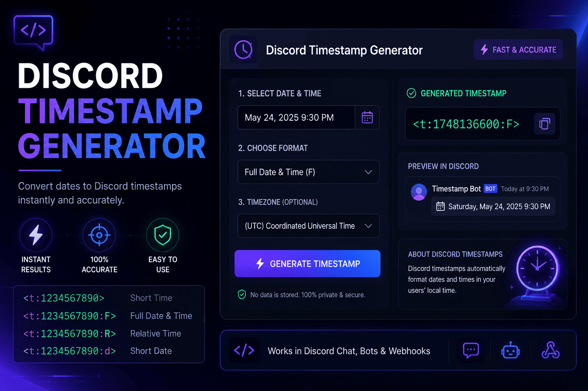

Short Date (d)
Shows: a compact numeric date.
Use it when: you need a quick deadline or due date and the time of day does not matter.
<t:1734567890:d> → 12/18/2024
Turn any date and time into a dynamic Discord timestamp in seconds. Pick a format, click generate, and copy a ready-to-paste code like <t:1734567890:R> that shows the right local time for every member of your server.
Pick a date, time and timezone, then generate every Discord timestamp format at once. Copy any single format, or grab them all.
Your generated timestamps will appear here.
Fill in the fields and press Enter or Generate.Generated Unix timestamp
0
| Format | Discord syntax | Live preview | Copy |
|---|
<t:1734567890:R> that Discord turns into a clean, readable date.
If you have ever posted an event time in a Discord server, you already know the pain. You type "raid starts at 8 PM," hit send, and the questions start rolling in. Eight PM where? Your time or mine? A Discord timestamp fixes that in one shot. It is a small piece of text that Discord reads and turns into a real date or time, shaped to fit each person who sees it.
Here is the part that makes it click. Every timestamp is built on a Unix number, which is just a count of seconds since January 1, 1970. That number has no timezone attached to it, so Discord can take the same code and show it as 8 PM to a member in New York, 1 AM to someone in London, and 9 AM to a friend in Tokyo. Same moment, three clocks, zero confusion. This is what people mean when they talk about a Discord time converter. The code carries the moment, and each app does the local math.
So why do Discord users need this? Because communities are global now. Your gaming squad, your study group, your work server, they rarely sit in one timezone. Posting a fixed time forces everyone else to convert it in their head, and people get it wrong. They show up an hour early, or they miss the event completely. That is where a Discord timestamp converter earns its keep. It turns a messy list of "5 PM PST / 8 PM EST / 1 AM GMT" into one tidy line that just works.
Our tool handles the whole conversion for you. You enter the date and time in your own zone, and the generator works out the exact Unix value behind the scenes, daylight saving included. You never touch a calculator, and you never guess. That is the difference between fighting with time and letting the tool carry it.
I built this to be a copy-and-paste job, nothing more. You do not need a bot, a plugin, or any coding know-how. If you can pick a date on a calendar, you can make a Discord timestamp in about ten seconds flat. Here is the whole routine.
That is really it. The first time I used a Discord timestamp generator I kept waiting for a catch, but there is not one. Pick, generate, copy, paste. You will have it memorized after a couple of tries.
Before & after
Static message
With a dynamic timestamp
Every timestamp uses the syntax <t:UNIX:STYLE>. The last letter is the only thing that changes. Here is what each one shows, when I reach for it, and what your readers actually see.
Shows: a compact numeric date.
Use it when: you need a quick deadline or due date and the time of day does not matter.
<t:1734567890:d> → 12/18/2024
Shows: a written-out date with the month spelled in full.
Use it when: a date needs to stick, like a launch day or an anniversary.
<t:1734567890:D> → December 18, 2024
Shows: a plain clock time, no date.
Use it when: everyone already knows the day and you just need the hour.
<t:1734567890:t> → 4:20 PM
Shows: the time down to the second.
Use it when: seconds truly matter, like a precise drop or countdown moment.
<t:1734567890:T> → 4:20:30 PM
Shows: a written date plus the time. This is the default if you skip the letter.
Use it when: you want a solid all-rounder for everyday posts.
<t:1734567890:f> → December 18, 2024 4:20 PM
Shows: the full picture, weekday included.
Use it when: the event is a big deal and you want zero chance of a wrong-day mix-up.
<t:1734567890:F> → Wednesday, December 18, 2024 4:20 PM
Shows: a live phrase that keeps updating on its own.
Use it when: you want a countdown for a giveaway, stream, or launch.
<t:1734567890:R> → in 3 days
Four small steps take you from a date in your head to a clean time that reads right for your whole server.
Pick your date and time in the tool near the top of this page. It reads your local timezone on its own and sorts out daylight saving, so you do not have to think about the math.
Click copy next to any format and the code lands on your clipboard. You can grab a single style or copy all seven at once if you want to keep your options open.
Want a countdown instead of a plain date? Swap the last letter of the code, or just copy the relative style. This step is optional since the default format already looks great.
Drop the code into any message, embed, or event description and hit send. Discord swaps it for a live local time the moment the message posts. No bot, no plugin, nothing extra.
These are the spots where a timestamp saves you the most grief. I lean on all three every week.
When your members are scattered across countries, one timestamp shows each of them their own local start time. No more posting a list of five zones and hoping people read the right one.
Drop a relative timestamp into an announcement and it becomes a living reminder. People see "in 2 hours" tick down to "in 10 minutes" without you editing a thing.
Logging when something happened? A fixed date-time timestamp keeps the record clear for everyone who reads it later, in their own timezone, long after the moment has passed.
There are a few tools out there. Here is what keeps people coming back to this one.
No sign-up, no clutter, no learning curve. You land on the page, pick a time, and copy your code in seconds. The whole thing is built to get out of your way.
The Discord time converter does the timezone and daylight saving math for you, so the moment you pick is the moment everyone sees. Off-by-an-hour mistakes just stop happening.
All seven Discord styles are generated at once, from a bare clock time to a full weekday date to a live countdown. Pick whichever fits the message and move on.
For years, coordinating time on Discord meant typing something like "raid at 8 PM EST" and crossing your fingers. People in other regions had to open a separate converter, do the sums, and hope they got it right. Plenty did not. If you ran a server with members in a handful of countries, you got used to the same reply over and over: "wait, what time is that for me?"
Discord added native timestamps to fix exactly this. The idea is simple but clever. Instead of storing a time that only means something in one place, you store a Unix number, which is just a count of seconds since January 1, 1970. That number points to the same instant everywhere on earth. Discord then paints it in each reader's own timezone and language when the message loads.
This is why dynamic timestamps beat writing dates by hand, and it is not a close call. A typed-out time is frozen the second you post it. It cannot adjust, it cannot count down, and it quietly assumes everyone shares your clock. A dynamic timestamp does the opposite. It adapts to every viewer, it updates itself when you use the relative style, and it never drifts out of date. Once you have felt the difference, going back to plain text feels like a step backward. That shift, from static text to a smart Discord time conversion, is the whole reason this tool exists.
A few real ways people put Discord timestamps to work day to day.
Raids, ranked nights, and scrims all live or die on timing. A timestamp lets your squad see the exact start in their own clock, so nobody loads in an hour late while the rest of the team waits.
Mods use timestamps for maintenance windows, slow-mode notices, and scheduled events. One clear time cuts down on the "when is this happening" questions that flood a busy channel.
Bot developers wrap a Unix number in the timestamp syntax so replies show live times. A reminder bot can say an event starts "in 30 minutes" and have it stay accurate without any extra code.
Streamers and creators post a countdown to a premiere or drop. The relative style builds hype on its own, ticking down in every follower's timezone right up to go time.
Notes from server owners, mods, and everyday Discord users who made the switch.
"I run a server with people from four continents. This ended the endless 'what time is that for me' replies overnight. I honestly wish I'd found it a year earlier."
"As a mod, the countdown format is my favorite. I post it once for an event and it just handles itself. My members actually show up on time now."
"I'm not techy at all, and I still had my first timestamp working in under a minute. Copy, paste, done. It does one job and it does it really well."
Quick answers to the most common questions about Discord timestamps.
Pick a date and time in the tool at the top of this page, then copy the code it makes. Paste that code into any message and Discord turns it into a readable time when you send it. There is nothing to install and no account needed.
Paste the generated code, such as <t:1734567890:R>, straight into the message box like normal text. When you hit send, Discord swaps it for a formatted date. It works in channels, threads, embeds, and direct messages.
You do not have to do anything special. A Discord timestamp always shows in each reader's own local time. You pick the moment once, and Discord handles the conversion for every person who sees the message.
Use the Discord time converter above. Enter your date and time, and it works out the Unix number behind the scenes. That number is what lets Discord show the same instant correctly in every timezone.
Discord uses the syntax <t:UNIX:STYLE>, where the Unix value is seconds since January 1, 1970 and the style is one letter. The seven styles are t, T, d, D, f, F, and R.
Use the relative style by ending the code with R, like <t:1734567890:R>. Discord shows phrases like "in 5 minutes" or "10 minutes ago" and keeps them updating on their own.
Write an opening <t:, then the Unix number in seconds, then a colon and a style letter, then a closing >. So a full code looks like <t:1734567890:F>. The tool builds this for you if you would rather not type it.
For dates you can use d for a short numeric date like 12/18/2024, or D for a written date like December 18, 2024. Discord shows the order in each reader's regional style, so you never have to guess day-first or month-first.
A timestamp is built from a Unix value, which is a plain count of seconds since January 1, 1970. On Discord that value gets wrapped in the <t:UNIX:STYLE> syntax so it can be shown as a date, a time, or a countdown.
Enter the time in your own timezone in the tool, then paste the code it gives you. Every reader still sees it in their local time. You never write out a specific zone, which is what keeps the message clear for everyone.
Let the tool handle it. Discord time conversion happens through the Unix number, and the generator calculates that from the date and time you pick. Daylight saving is handled too, so the result stays accurate.
Two ways. The quick way is the generator on this page: pick, generate, copy, paste. The manual way is to find your Unix number and wrap it in the timestamp syntax yourself. For everyday posting, the tool is faster and safer.
You cannot change another person's clock, and you do not need to. To point a timestamp at a new moment, edit the message and change the Unix number in the code. Discord updates the displayed time right away for everyone.
Want to go deeper? These guides cover the formats, the how-to, and the trade-offs in plain language.

The complete beginner guide, from your first code to picking the right style every time.
Read article
All seven formats explained with examples, best uses, and the mistakes to dodge.
Read article
Which way wins? A practical head-to-head with pros, cons, and real examples.
Read article
A friendly walkthrough with real examples you can copy and adapt in seconds.
Read articleIt is free, private and takes less than ten seconds. Pick a date, choose a format and copy the code.
Open the Generator